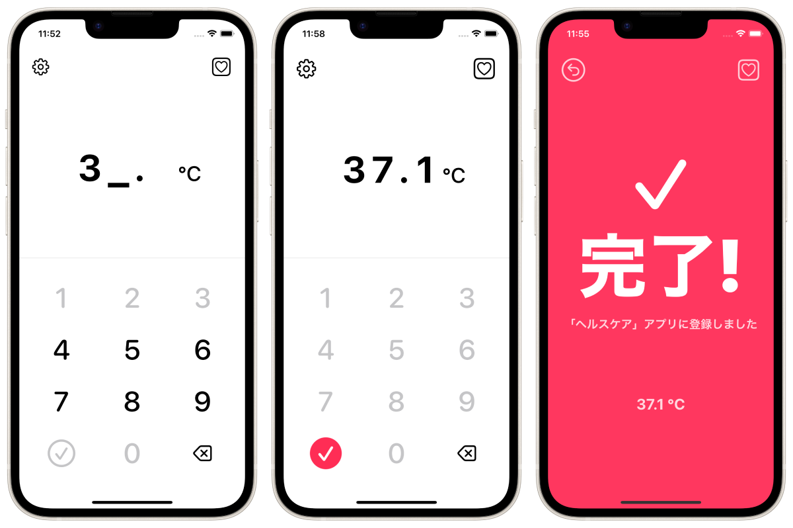

Registra tu temperatura corporal en la aplicación "Health Care" de Apple lo antes posible.



Esta es la forma más rápida (manual) de registrar los datos de la temperatura corporal en la aplicación 'Health Care' de Apple preinstalada en el iPhone.
Esta aplicación no puede leer, ver o gestionar los datos anteriores de la aplicación de Asistencia Sanitaria. Esta aplicación está destinada únicamente a registrar los datos en la aplicación "Asistencia sanitaria". Por favor, compruebe los datos registrados en la aplicación 'Health Care'.
Las personas suelen medir su temperatura corporal (y la temperatura corporal basal) a diario con un termómetro. Muchos usuarios de iPhone registran sus datos de temperatura (o temperatura corporal basal) en la aplicación "Health Care".
La mejor solución es utilizar un termómetro inteligente que funcione con la app Health Care y almacene automáticamente las mediciones, pero estos pueden ser caros e inaccesibles. Los datos también pueden registrarse manualmente en la aplicación "Health Care", pero lamentablemente la aplicación "Health Care" no está diseñada para el registro manual rutinario de datos de medición. Por lo tanto, la introducción manual de datos que se producen continuamente a diario, como las mediciones de la temperatura corporal, puede ser una experiencia muy lenta y estresante.
Esta aplicación se ha desarrollado para resolver estos problemas.
Gratis
Ocultar anuncios (160 yenes)